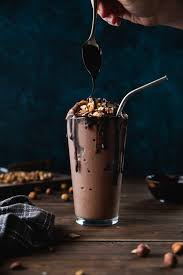
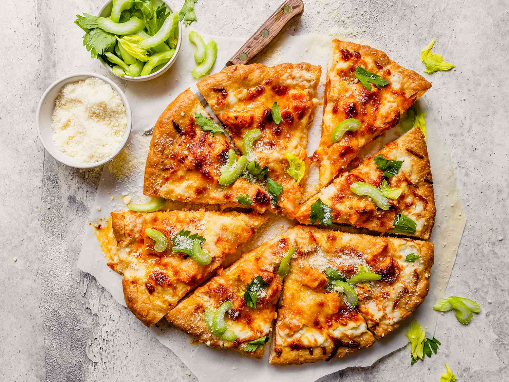

Recipe 1: Momos
| S no | Ingredient | Quantity |
|---|---|---|
| 1 | Maida | 2 cups |
| 2 | Salt | As per taste |
| 3 | Water | Enough to knead |
| 4 | Oil | 1 tbsp |
| 5 | Minced Chicken | 250g |
| 6 | Medium onion | 1 |
| 7 | Spring onion | 1 |
| 8 | Garlic | 1 tbsp finely chopped |
| 9 | Ginger | 1 tbsp finely chopped |
| 10 | Green Chilli | 1 tbsp finely chopped |
| 11 | Pepper | 0.5 tbsp |
| 12 | Soy Sauce | 1 tsp |
| 13 | Oil | 1 tsp |
Method:
- Make the dough
- In a bowl, mix flour and salt.
- Add water slowly and knead into a smooth, soft dough.
- Cover and let it rest for 20–30 mins.
- Prepare the filling
- In another bowl, mix chicken, onion, garlic, ginger, chilli, salt, pepper, soy sauce, and oil.
- Stir well so the flavours combine.
- Shape the momos
- Divide dough into small balls.
- Roll each into a thin circle (like small puris).
- Place 1 spoon of filling in the centre.
- Fold and pleat the edges to seal (half-moon or round shape).
- Steam them
- Place momos in a greased steamer (or use a plate inside a big vessel with a lid).
- Steam for 10–12 mins until dough is cooked and slightly glossy.
- Serve hot!
Best enjoyed with spicy chutney or tomato–chilli sauce.
Watch the video for a quick guide!

Back to top
Recipe 2: Chocolate Thickshake
| S no | Ingredient | Quantity |
|---|---|---|
| 1 | Cold Milk(Full cream for best thickness) | 2 cups |
| 2 | Chocolate Ice Cream | 4 Scoops |
| 3 | Chocolate Syrup | 3-4 tbsp chocolate syrup(or cocoa powder+sugar) |
| 4 | Whipped Cream | As needed |
| 5 | Chocolate sprinkles(optional) | As needed |
Method:
- Blend it
- In a blender, add milk, chocolate ice cream, and chocolate syrup.
- Blend for about 30–40 seconds until smooth and creamy.
- Serve
- Pour into chilled glasses.
- Top with whipped cream, chocolate syrup drizzle, and shavings if you want it fancy.
- Enjoy
- Serve immediately with a straw or spoon (it’ll be thick).
If you want it extra thick, just reduce milk to 1½ cups or add 1 more scoop of ice cream!
Watch the video for a quick guide!

Back to top
Recipe 3: Chicken Pizza
| S no | Ingredient | Quantity |
|---|---|---|
| 1 | ready-made pizza base | 1 |
| 2 | cooked chicken (shredded or diced) | 100g |
| 3 | pizza sauce (or ketchup + oregano) | ½ cup |
| 4 | mozzarella cheese (grated) | 1 cup |
| 5 | onion (sliced) | ½ |
| 6 | Capsicum(sliced) | ½ |
| 7 | oil/butter | 1 tbsp |
| 8 | Salt, pepper,oregano/chilli flakes | As per taste |
Method:
- Prep the oven and the Chicken
- Preheat the oven to 200oC
- Heat oil in a pan, toss chicken with salt, pepper, and oregano for 1-2 mins.
- Assemble the pizza
- Spread pizza sauce evenly over the base
- Add half the cheese first.
- Arrange chicken, onion, and capsicum slices.
- Sprinkle remaining cheese on top.
- Bake
- Place pizza on a tray or directly on the oven rack.
- Bake for 8-10 mins until cheese melts and edges turn golden
- Serve
- Sprinkle chilli flakes or extra oregano.
- Slice and enjoy hot
If you want it extra cheesy, add ½ cup more mozzarella or mix in cheddar for extra flavour.